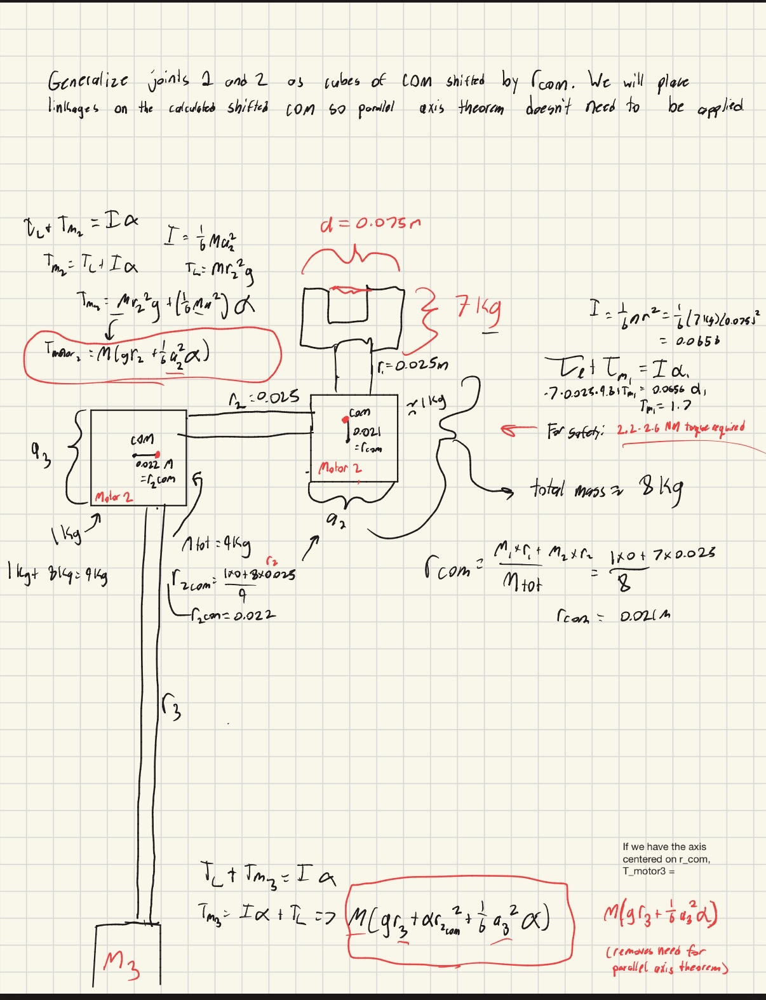
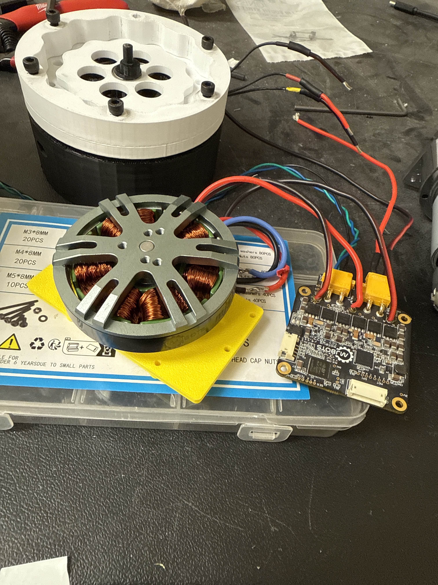
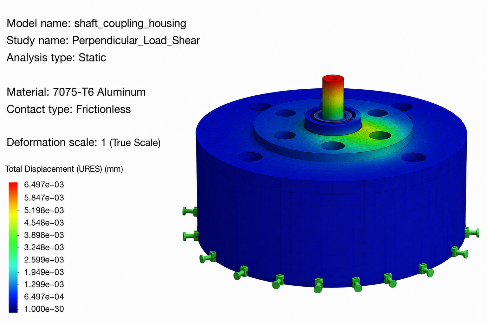

Key Takeaways
- Derived torque model across all 4 wrist motors, enabling 50% motor cost reduction
- FEA-driven weight optimization: reduced housing mass by 20% while staying under deflection threshold
- Hand calcs matched FEA within 10%, validating the simulation setup
- 7 kg payload capacity verified through analysis and physical testing

CAD model (left) and machined 7075-T6 aluminum housing (right)
Overview
Part of the Johns Hopkins Mars Rover Team manipulator subteam. I designed the cycloidal gearbox housing for the wrist assembly, sized motors for a 7 kg payload, and optimized the housing for weight while maintaining stiffness. The approach: derive torque requirements analytically, use FEA to validate and push the design lighter, then verify with hand calcs before sending to the machine shop.
Torque Analysis
The wrist has 4 motors, each seeing different torque depending on arm configuration. I derived the torque equations for each joint using statics, then found the worst-case loading at full extension with max payload.

Torque derivation for motor sizing

Selected BLDC motor with driver board
At the first motor, 7 kg payload at r = 0.025 m gives a base torque of 1.7 N·m. With 1.3x safety factor, minimum requirement is 2.2 N·m. I derived equivalent equations for all 4 motors using the same approach.
This analysis showed we could use smaller BLDCs than originally planned, cutting motor cost by about 50% while still meeting torque requirements with margin.
Housing Weight Optimization
The baseline housing design was conservative. I used FEA to evaluate how much material could be removed while staying under the deflection threshold for gear alignment.
For cycloidal gearboxes, shaft deflection needs to stay under ~8 μm to maintain proper gear mesh. This became the target for the optimization.
| Component | Original | Optimized | Reduction |
|---|---|---|---|
| Housing wall | 6 mm | 5 mm | 17% |
| Shaft diameter | 14 mm | 12.7 mm | 9% |
| Flange thickness | 8 mm | 6 mm | 25% |
| Total mass | 253 g | 210 g | 17% |
Combined with additional lightening pockets in non-critical areas, the final design hit the 20% weight reduction target. DFM principles were applied throughout: wall thicknesses stayed above CNC limits, tolerances were specified only where they mattered for gear alignment.
FEA Validation
Ran a static study on the optimized shaft coupling under 70 N lateral load (worst-case from payload at full extension). The goal: confirm deflection stays under 8 μm threshold.

SolidWorks FEA displacement plot (7075-T6 Al, 70 N lateral load)
| Metric | Value | Threshold | Status |
|---|---|---|---|
| FEA deflection | 6.5 μm | < 8 μm | PASS |
| Hand calc | 7.2 μm | < 8 μm | PASS |
| FEA vs hand calc | 10% diff | < 15% | PASS |
Hand calc assumes a pure cantilever from a rigid wall, which slightly overestimates deflection. FEA captures the additional stiffness from the flange plate and using tetrahedral elements, which have increased stiffness due to triangular nature. The 10% agreement confirms the model is set up correctly and the optimized geometry is good to machine.
Bottom Line
- Torque analysis on all 4 motors enabled proper actuator sizing at 50% lower cost
- FEA-driven optimization reduced housing weight 20% while meeting stiffness requirements
- Hand calcs validated FEA results before committing to machining
- 7 kg payload capacity confirmed through analysis and experimental testing